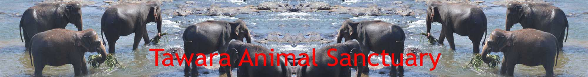
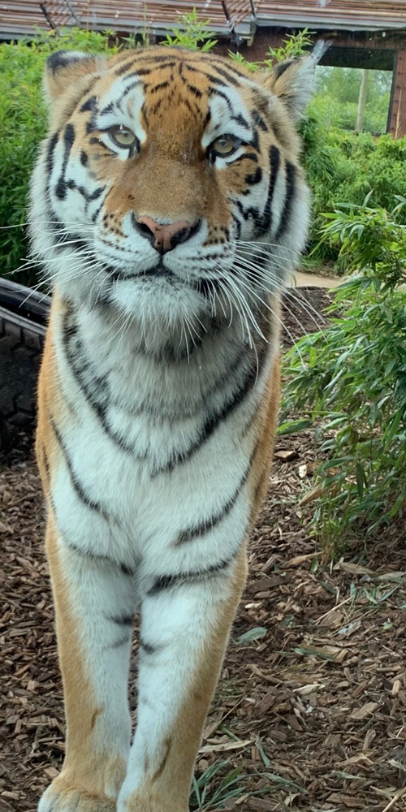
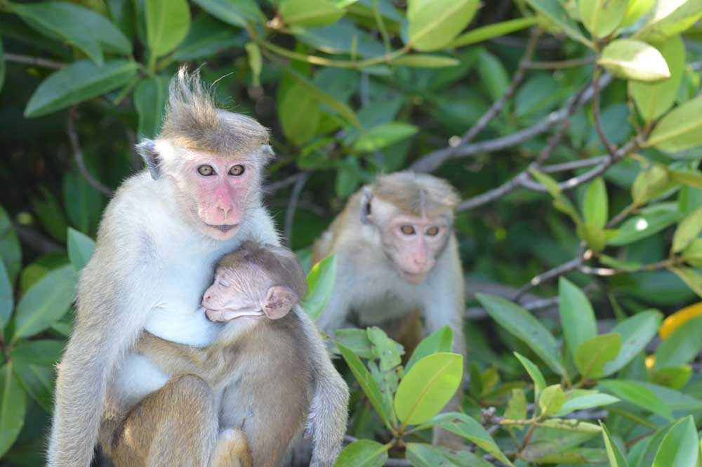
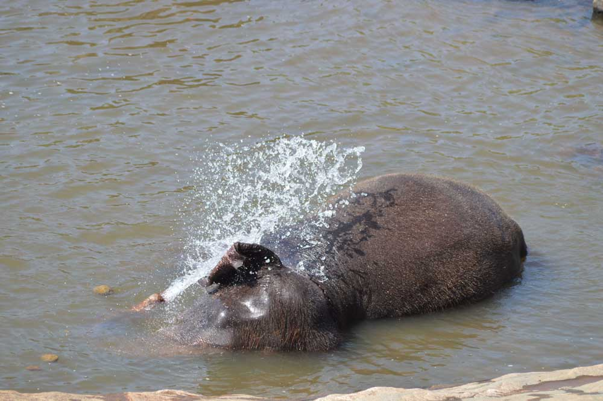

|  | ||
|  | ||
Help us to support animals who have been injured or have lost their natural habitat. We always care for these animals and, where possible, return them back to the wild.Click on the images below to find out more about the elephants or to contact us about supporting the monkeys.WEB page develop by:Ramon duarte,UY027,0006 |
||
|  |  | |